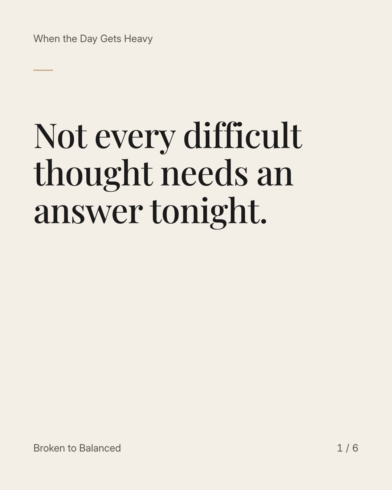
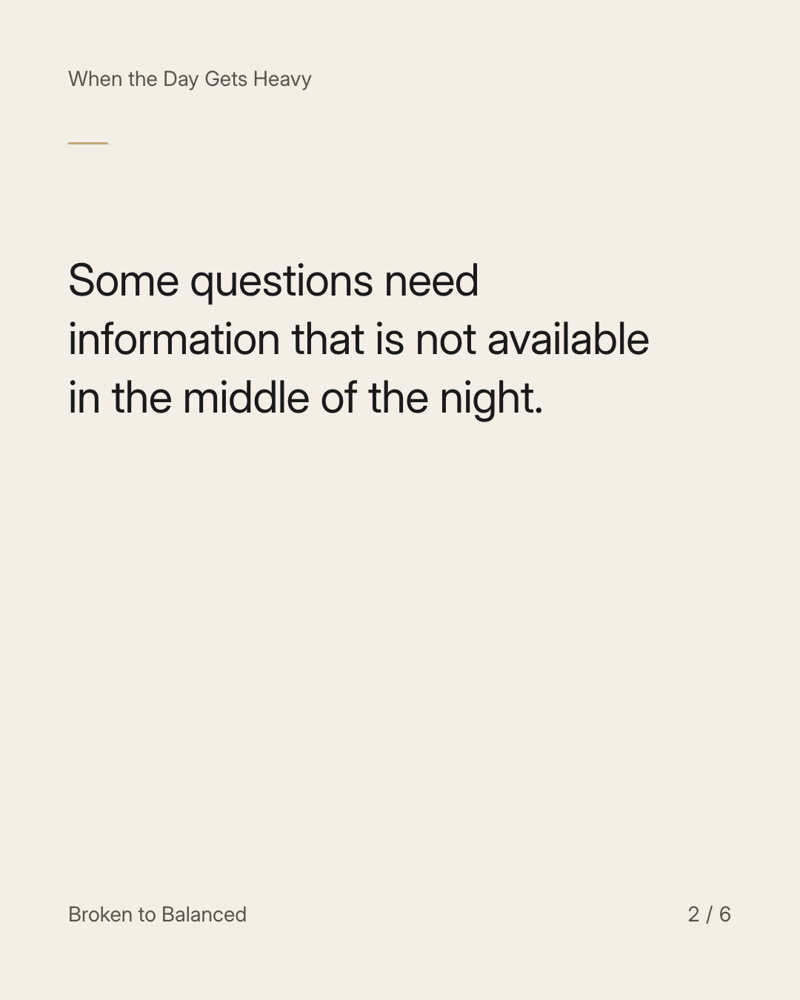
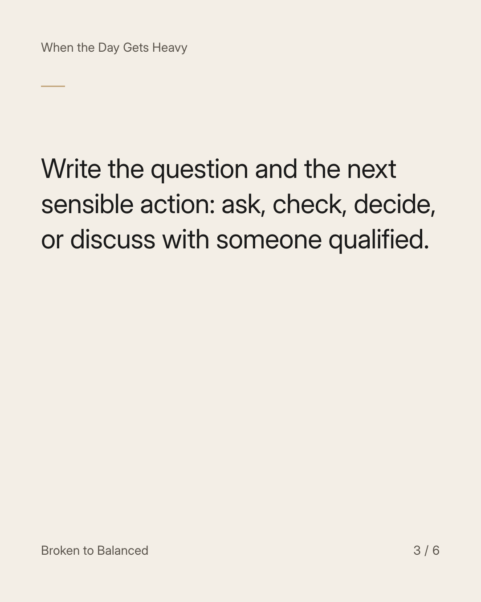
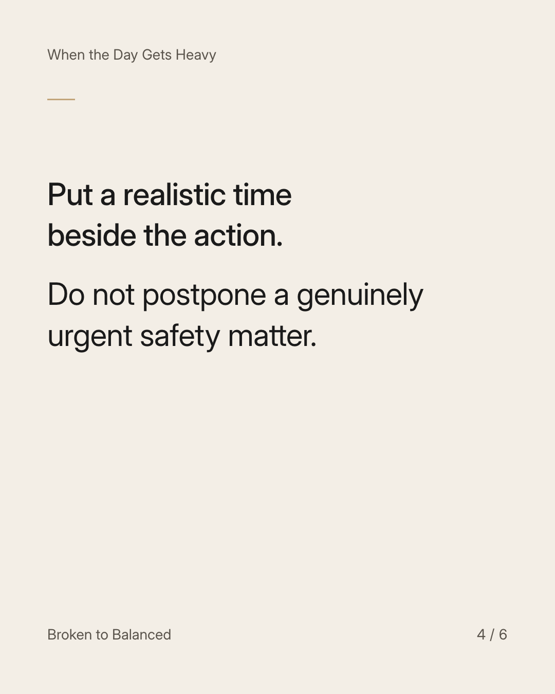
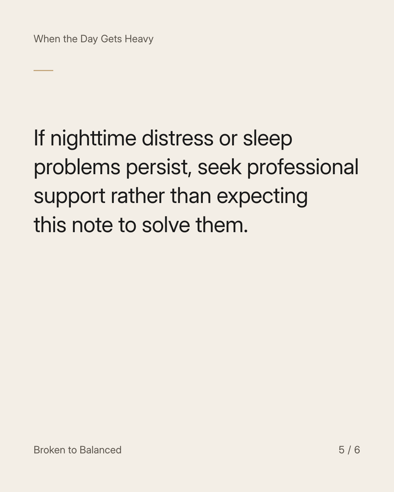
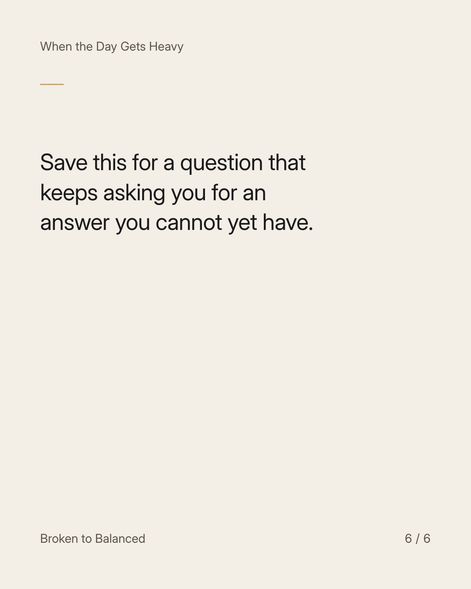

Exact text and accessibility text
Not every difficult thought needs an answer tonight.
Slide 1 of 6. Not every difficult thought needs an answer tonight.


Exact text and accessibility text
Some questions need information that is not available in the middle of the night.
Slide 2 of 6. Some questions need information that is not available in the middle of the night.


Exact text and accessibility text
Write the question and the next sensible action: ask, check, decide, or discuss with someone qualified.
Slide 3 of 6. Write the question and the next sensible action: ask, check, decide, or discuss with someone qualified.


Exact text and accessibility text
Put a realistic time beside the action. Do not postpone a genuinely urgent safety matter.
Slide 4 of 6. Put a realistic time beside the action. Do not postpone a genuinely urgent safety matter.


Exact text and accessibility text
If nighttime distress or sleep problems persist, seek professional support rather than expecting this note to solve them.
Slide 5 of 6. If nighttime distress or sleep problems persist, seek professional support rather than expecting this note to solve them.


Exact text and accessibility text
Save this for a question that keeps asking you for an answer you cannot yet have.
Slide 6 of 6. Save this for a question that keeps asking you for an answer you cannot yet have.
Exact caption
Plain-text fallback: select and copy the caption.